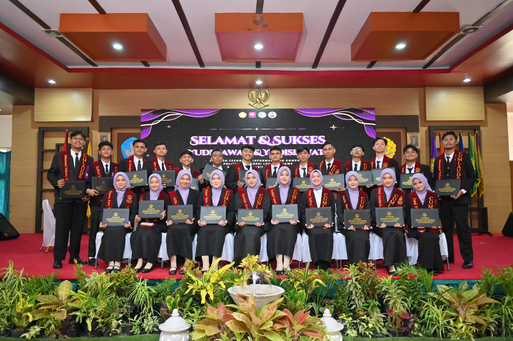

Tentang Saya
Saya memiliki ketertarikan pada pengujian perangkat lunak, integrasi sistem, dan dokumentasi teknis. Saya senang menganalisis masalah, memastikan sistem berjalan sesuai kebutuhan, serta menyusun informasi secara terstruktur dan mudah dipahami.
Ketertarikan tersebut saya kembangkan melalui proyek akademik dan pengalaman magang, termasuk pengujian API dan performa sistem menggunakan Postman dan Apache JMeter, pemantauan server menggunakan Netdata, serta implementasi sistem terintegrasi berbasis WhatsApp API, Laravel, VPS dan MySQL. Selama magang, saya juga terlibat dalam peninjauan prosedur kerja, dokumentasi proyek infrastruktur jaringan, dan kegiatan Knowledge Management.
Pendidikan
Politeknik Negeri Lhokseumawe
D-IV Teknologi Rekayasa Komputer Jaringan, 2022–2026
IPK 3.83/4.00 (Cumlaude)

Pengalaman
Kumpulan pengalaman magang dan proyek yang relevan dengan bidang Software Testing, Technical Writing, dan IT Governance.
- Semua
- Software Testing
- Technical Writing
- IT Governance


Proyek
Beberapa proyek akademik dan implementasi sistem yang pernah saya kerjakan.


Keahlian & Tools
Tools dan keahlian yang saya gunakan dalam pengujian, dokumentasi, dan tata kelola TI.
Software Testing
Postman, Apache JMeter, manual testing, API testing, performance testing.
Technical Writing
Dokumentasi teknis, user guide, prosedur kerja, knowledge management.
IT Governance
Peninjauan prosedur kerja, dokumentasi infrastruktur, tata kelola TI.
System Monitoring
Netdata, pemantauan server, analisis performa sistem.
Web Development
Laravel, MySQL, VPS, WhatsApp API, integrasi sistem.
Networking
Infrastruktur jaringan, dokumentasi jaringan, konfigurasi dasar.